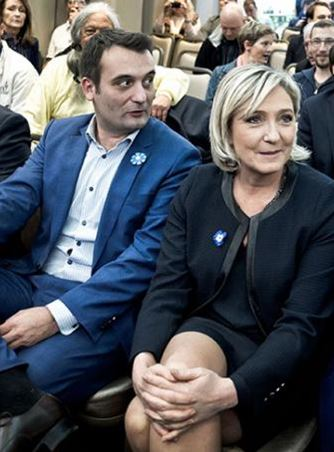

Oui un coup d’état dans le sens que pour la première fois sans doute dans l’histoire de la France, le déroulé d’une élection a pu suivre un scénario prévu et exécutée avec le soutien actif du désormais premier des pouvoirs : le pouvoir médiatique. Un pouvoir médiatique ayant permis que ne soit respecté un agenda planifié en amont par ceux-là mêmes pour qui l’élection d’Emmanuel macron était, et de loin, la meilleure solution pour « leurs » intérêts1. La plateforme En Marche est juste le nouvel emballage d’un produit destiné à maintenir l’hyper structure actuelle (ses élites et ses réseaux) mais avec un peu de maquillage, en l’espèce quelques nouveaux visages, mais surtout l’affirmation martelée que En Marche serait le médicament nécessaire à l’organisme France.
Le peuple français qui était sur le point de manifester sa colère, son insatisfaction, ses inquiétudes et son rejet profond et viscéral du système sociétaliste s’est fait voler son destin par une incroyable manipulation des esprits et des cœurs.
L’élection d’Emmanuel Macron s’est faite sans programme, sans idée, sans projet mais par des phrases vides et des slogans, présentés comme des paroles quasi-divines par le premier pouvoir. Son élection a été rendue possible par une incroyable campagne marketing ayant vendu l’image du candidat et notamment « sa jeunesse, son énergie, sa volonté de rendre les choses différentes » (SIC) pour citer Ruth Elkrieff.
Jamais dans l’histoire de France une campagne n’avait pourtant vu de candidats avec des projets authentiques et radicalement différents (Fillon, Mélenchon, Le Pen, Asselineau …) mais c’est le candidat du vide qui l’a emporté. La machine médiatique2 a noyé toute réflexion authentique et toute velléité de débat dans un bruit de fond confus mais en assénant une image : celle d’Emmanuel Macron, censé porter un projet nouveau comme un sorcier congolais devant des disciples en transe. Emmanuel Macron n’avait-il pas lui-même du reste parlé de magie en politique ?
Hagards, sonnés par cette hyper matraquage médiatique les électeurs français se sont fait voler leur élection en se faisant indirectement priver de tout droit à une quelconque réflexion indépendante. La victoire d’Emmanuel Macron et de la plateforme EM est la victoire des artisans de la société liquide dont Emmanuel Macron est l’artefact le plus abouti.
François Fillon, lors d’un de ses meetings à Besançon, affirmait lui-même discerner «dans le projet d’Emmanuel Macron le souhait d’une société d’individus et non plus de citoyens, une société plastique, une société liquide.» Une société liquide, médiatique et financière dont l’extase provoquée par ce 7 mai 2017 est inversement proportionnelle avec le vide abyssal des Champs Élysées qui accompagna la prise de fonction du nouveau président.
L’incroyable scénario médiatico-totalitaire visant à présenter le socialiste libéral et pro-européen Emmanuel Macron comme le candidat dont le destin était de gagner s’est accompagné d’une opération de guerre médiatique totale à l’encontre du candidat François Fillon dans le but d’effriter au maximum sa base électorale en noyant ce dernier sous l’acte d’accusation de « corruption ».
L’objectif était double :
- Permettre à Marine Le Pen d’arriver au second tour et ainsi assurer une victoire qui plus est « morale » d’Emmanuel Macron en lui permettant d’achever la libéralisation de la gauche, dynamique entamée en 1983.
- Affaiblir au maximum le parti LR en vue des Législatives de juin 2017 et sans doute sur la plus longue durée historique en vue des élections présidentielles de 2022 afin d’empêcher l’émergence d’une quelconque dynamique conservatrice, seul danger politique réel pour la vague sociétaliste et pro-européenne. Une vague conservatrice que François Fillon représentait, peut-être même malgré lui.
OBJECTIF PREMIER : ACHEVER LA GAUCHE FRANÇAISE
L’effritement et la cannibalisation de la droite française pour la contraindre à se centriser est un objectif stratégique et politique limpide, pendant historique du processus qui a frappé la gauche française depuis 1971. Un processus ayant vu la destruction du parti communiste (jugé trop proche de Moscou) par une nouvelle gauche socialiste (SFIO) devenue peu à peu proto-libérale (PS) puis dès 1983 la mort de cette gauche « socialiste » (7% à la présidentielle de 2017) par sa lente libéralisation et sa mue vers une troisième gauche, toujours plus diversitaire (« il n’y a pas de culture française ») toujours plus sociétale et surtout toujours plus atlantiste et libérale.
Cette troisième gauche que l’on peut qualifier de libéro-sociétaliste, euro-fédéraliste dont l’émergence fortement appuyée médiatiquement a entrainé l’avènement et la prise de pouvoir d’Emmanuel Macron, Young Leader de la fondation franco-américaine, banquier d’affaires ayant réussi à constituer un gouvernement de socialistes et centristes libéraux et l’émergence d’un ersatz de société civile sans queue ni tête visant à donner l’illusion d’une promotion des minorités. C’est le long mais inévitable avènement de cette gauche diversitaire qui nait en France sur le modèle américain et avec du reste l’aide active des réseaux américains comme on peut s’en rendre compte ici3, là4 ou là5.
Un processus qui n’est pas un hasard de l’histoire mais bel une évolution politique et historique accompagnant sur la période récente la reconversion de l’extrême gauche française, antisoviétique, à l’économie de marché et la construction européenne mais surtout sous drapeau atlantiste, sorte de réalisation d’une fusion plus qu’inattendue que certains qualifient de nouveau courant de pensée maoccidentaliste.
OBJECTIF SECOND : TUER TOUTE DYNAMIQUE CONSERVATRICE / NÉO-GAULLISTE
Le Chiraquisme a vu la « droite » tomber dans un piège stratégique qui allait neutraliser de facto toute possibilité de résurgence souverainiste et conservatrice.
Sous pression de la pensée dominante et du politiquement correct, la droite allait moralement se voir interdire d’aborder les thématiques d’identité, de souveraineté, de patriotisme et de civilisation en se faisant systématiquement accusé de faire le jeu du Front national. En cédant cette rhétorique, la droite allait de retrouver contrainte de laisser prospérer un Front National à sa droite, Front national qui allait prospérer sur ces thématiques pour capter les électeurs de cette France dite périphérique, menacés par l’immigration et mondialisation économique.
Prise en étau et acculée, les brillants stratèges de l’UMP puis des LR allaient terminer de faire perdre à leur famille de pensée la légitimité même morale à occuper le terrain sécuritaire, identitaire, et se retrouver contrainte de se lancer dans une course au centre, une course avec la gauche.
Ce concept d’union de la droite et du centre aurait peut-être pu fonctionner si dans la même séquence historique, le centre n’allait pas lui glisser inexorablement vers la gauche que l’on pense au soutien de François Bayrou à Ségolène Royal en 2007 puis à François Hollande en 2012.
L’élection présidentielle de 2017 sera la consécration de l’échec de cette stratégie puisque le centre et même la gauche de la droite (les LR constructivistes) se trouveront en parfaite harmonie morale et politique avec la nouvelle gauche au sein de la plateforme En Marche.
Une nouvelle harmonie pour une nouvelle alliance politique et un nouveau front républicain mais sans les courants de droite française incarnée par le courant réaliste des LR, et sans la mouvance souverainiste de droite, soit les électorats conservateurs de Fillon, sécurito/identitaires de Le Pen et souverainistes de Dupont-Aignant.
L’objectif est limpide comme de l’eau de roche : stériliser les pans fondamentaux de l’héritage Gaulliste afin d’empêcher un potentiel parti de conservateur de s’y référer, prendre le pouvoir et porter atteinte au grand agenda d’intégration européenne et euroatlantique.
L’élection de 2017 ne devait permettre qu’une pseudo-alternance destinée à leurrer les électeurs mais ne remettant en cause ni la construction Européenne, ni l’OTAN, ni le mariage pour tous, ni l’agenda de Bruxelles qu’Emmanuel Macron ne cesse de confirmer dans sa communication « Reconquérir la souveraineté par l’Europe pour bâtir ensemble une puissance européenne. Nos défis ne sont plus à l’échelle de nos Nations. » (https://twitter.com/EmmanuelMacron/status/905849990618206209).
Un processus européen piloté d’un pôle bruxellois sans souveraineté et qui ne peut nous empêcher de repenser à cette question du Général de Gaulle : « mais qui est le vrai fédérateur derrière tout ça ? ».
On comprend mieux la guerre totale menée par « le système » contre tout ce qui aurait pu faire ressurgir cette sève historique nationale, conservatrice et gaullienne, capable de remettre en cause ces trajectoires et de replacer les intérêts supérieurs de la nation française au centre du jeu.
L’ÉLECTION S’EST-ELLE JOUÉE AILLEURS ?
Sur le plan international les élections de 2017, présidentielles et législatives n’ont en réalité apporté aucuns changements. Bien au contraire elles ont vu l’accélération des grandes dynamiques initiées par la direction civilisationnelle imposée à la France depuis la révolution de couleur qu’aura été mai-68 ayant entrainé directement le départ du général de Gaulle. Une direction civilisationnelle ayant vu l’entrée de la France dans un processus d’intégration à l’agrégat civilisationnel euroatlantique ainsi que dans l’OTAN.
Cette dynamique, initiée au cours cinquante dernières années a entrainé la France dans un processus d’auto décomposition systémique : identitaire, culturel, civilisationnel mais aussi économique. En effet la construction européenne au lieu de construire l’Europe l’a déconstruite sur le plan civilisationnel, Bruxelles s’attelant à construire le mondialisme et à transformer la civilisation Européenne en Open-society, en village global mais sous domination militaire, politique et économique américaine.
Les Français doivent être conscients que c’est sans doute la principale des raisons pour laquelle le grand dispositif s’est attaqué avec tant de véhémence à François Fillon, qui s’est pourtant avéré un bien piètre « potentiel De Gaulle » et surtout d’une lâcheté sans fond face au « système » médiatique. Ce que ce système craignait plus que tout n’était pas le candidat de la droite conservatrice en tant que tel mais paradoxalement car il était le seul candidat qui « aurait » pu, involontairement sans doute, provoquer une disjonction et initier, poussé par l’histoire, des dynamiques nouvelles sur le plan intérieur mais aussi extérieur.
Quelles sont-elles ?
Sur le plan intérieur, contribuer au déclenchement d’une dynamique authentiquement Conservatrice et de rassemblement de la droite hors des murs tandis que sur le plan extérieur réorienter la politique extérieure française sur un axe moins atlantiste et plus fortement non aligné.
Ce grand réalignement de la France en géopolitique était la terreur du dispositif adverse qui pendant la campagne n’a cessé de présenter le candidat de la Droite comme étant l’ami de Poutine et aussi l’ami d’Assad.
Mais après tout De Gaulle n’est-il pas lui-même allé dans les peu démocratiques Union Soviétiques et république populaire de Chine pour aller redonner à la France une voix dissonante et non totalement alignée ?
LES DROITES LES PLUS BÊTES DU MONDE ET LA NOUVELLE TRAHISON DU CENTRE
Engagée dans une bataille pour un centre qui n’est pas de Droite, les élites des partis captivant les électorats dits de droite (conservateurs, patriotes, sécuritaires et identitaires) se sont retrouvées pris au piège de leur inconsistance, de leur incompétence mais aussi et surtout de leur manque de courage.
Alors que la plateforme LR avait un boulevard pour gagner cette élection, le candidat Fillon n’a su saisir la fabuleuse opportunité d’aller chercher les électeurs sur leurs attentes profondes. La principale erreur du candidat Fillon fut sans doute son inconsistance pour résister au rouleau compresseur médiatique en s’affirmant incapable de prendre les risques nécessaires à créer cette rupture dialectique qui aurait pu lui permettre d’apparaitre comme un candidat rebelle et donc de rupture.
Incapable de résister aux pesanteurs et gravités internes de la machine LR, c’est à cause de la gauche de la droite, soit du centre, que LR perdit cette élection puisque ce centre allait une fois de plus, comme en 2007 puis 2012, trahir la droite en se ralliant au candidat de gauche. Quel gâchis alors que les électeurs de la primaire choisirent précisément le candidat le plus conservateur pour mener cette bataille.
Un gâchis d’autant plus que si le FN semblait promis à un score élevé dans un contexte global lui étant plus que favorable, ses élites choisirent eux également une stratégie sans doute assez suicidaire électoralement en s’aventurant sur le terrain risqué de l’économie et d’une très hypothétique (à ce jour) sortie de l’Euro. Une stratégie suicidaire car déployée au détriment des thématiques traditionnelles d’identité, d’immigration, de sécurité, de civilisation qui sont précisément les thématiques permettant la jonction des électorats patriotes, conservateurs et sécuritaires en récupérant le vote des catégories populaires aujourd’hui captées par le FN.
Le bloc conservateur a payé, encore une fois, la terrible division structurelle qui le frappe, l’éparpillement de ses électorats entre divers partis et surtout l’inconsistance et l’incompétence de ces dirigeants.
LES NOUVELLES RUPTURES
En remportant 88 % à Neuilly-sur-Seine, 84 % à Saint-Denis et 95 % à New York, Emmanuel Macron s’affirme comme le candidat de l’économisme, des métropoles-états, d’une européanisation accélérée et de la mondialisation heureuse. Une population qui considère que l’on est un urbain et un citoyen du monde des grandes villes avant d’être un citoyen d’une Patrie ou d’un état et que les institutions6 priment sur l’identité.
Emmanuel Macron a réussi à souder les électorats des français hors-sol avec celui de la France diversitaire.
Son adversaire du second tour Marine Le Pen est-elle arrivée en tête chez les jeunes et surtout les primo-votants (obtenant 44% des voix des jeunes qui travaillent !) ainsi que dans cette France périphérique qui souffre de la mondialisation économique et d’un multiculturalisme ayant abouti au chaos migratoire ayant vu des pans entiers de population fuir les banlieues des grandes villes. Une France périphérique pour laquelle il n’y a pas d’Open Society mais un besoin de frontières, de moins d’immigration et surtout de plus d’emplois.
Cette distinction sociologico-électorale devrait de toute évidence s’accroitre avec la disparition des classes moyennes qui devraient grossir les rangs de la France périphérique à l’avenir et accentuer la vague conservatrice à venir. Selon Mathieu Bock-Côté7 :
« Il ne faut en effet pas confondre l’avortement de la campagne Fillon avec l’avortement d’une tendance lourde qui s’est développée dans la société française pour répondre à sa décomposition ».
Ces tendances lourdes, amplifiées par la complexe situation internationale devraient aboutir à une profonde recomposition des partis politiques français dont la fragilité s’est avérée aussi grande que n’est avéré le rejet des électeurs à leur égard, électeurs qui sont réussi à faire perdre les deux grands partis traditionnels de gouvernance.
LES PARTIS POLITIQUES ACTUELS DEVRAIENT DONC DISPARAITRE
1) Il sera intéressant de voir ce que peut devenir la plateforme En Marche et surtout si elle arrive à consolider son ancrage au centre en devant une nouvelle plateforme politique française initiant un mode de gouvernance de coalition systématique et qui aspire sans cesse les ressources du centre et du centre droit soit l’aile gauche de LR. Le tour de magie ne se reproduira sans doute pas en 2022 sauf bien sûr en cas d’absence totale d’une quelconque opposition crédible ce qui pourrait être le principal objectif stratégique d’Emmanuel Macron au cours de son mandat afin de s’assurer une réélection même sans résultats parlant au cours de son premier quinquennat.
2) La situation est sans doute critique au Front National. La normalisation initiée par Marine Le Pen et Florian Philippot et la cannibalisation idéologique et tactique du parti par ce dernier ont presque fini par transformer le FN en un parti patriote de gauche délaissant sans doute excessivement l’identité et le sociétal, sujets pourtant brulants pour leurs électeurs. Le départ de Florian Philippot devrait accélérer la dynamique née du second tour de l’élection présidentielle : celle de la disparition inévitable du Front National, ou de son retour au statut de groupuscule.
3) A gauche le PS en en mort clinique tandis qu’il faudra voir si la France Insoumise peut transformer l’essai et sortir des ornières et des pièges qui l’attendent. Jean Luc Mélenchon ne devrait visiblement pas s’accorder plus de destin que celui d’être un Tsipras français, soit la troisième roue du système marchand, libéral et atlantiste, un système dont il est finalement membre du parti socialiste de 1976 à 2008, tout comme Emmanuel Macron.
Il est un comble que cette élection ai signé la mort du PS mais que le président et celui que les médias nous désignent comme son principal opposant soit tous les deux issus de ce cadavre politique.
4) La situation est presque aussi grave aux LR qui ne se sont pas encore relevés du chaos des présidentielles. Pire les élites de ce parti semblent déterminées à continuer à aller chercher « au centre » les électeurs qui lui manquent, répétant ainsi le mode opératoire qui leur a fait perdre l’élection présidentielle de 2017. Les militants lors des dernières primaires du parti ont pourtant systématiquement choisi les candidats les plus à droite (Sarkozy, Fillon …) tandis que le centre est à chaque élection un soutien du candidat de gouvernance de gauche : Hollande, Royal puis Macron.
Qu’est ce qui ne tourne pas rond chez les « élites » de droite ?
L’élection plausible de Laurent Wauquiez devrait remettre une forme d’ordre dans le parti et pourrait lui permettre d’assumer sa ligne droitière décomplexée, mais est-ce que cela sera possible avec l’ancienne garde à bord tout en maintenant une alliance avec un centre qui s’affirme clairement à gauche ?
2017 : UNE LEÇON POUR LES NAÏFS
Pendant ce temps le nouveau grand centre sociétaliste et européiste incarné par le candidat Macron et sa plateforme En Marche pérennise le contrôle de la gouvernance sur la France et périphérise encore plus toute opposition en mettant fin au clivage droite-gauche et en éloignant de la gouvernance tant la gauche dite anti libérale de Mélenchon, la mouvance nationaliste DLF/FN et la droite conservatrice en général.
L’élection du candidat qui représente l’alliance des Frances les plus a-conservatrices et antinationales est un sursaut stratégique absolument incroyable des structures de gouvernances qui nous montrent leur pouvoir mais aussi que la France, au sein de l’union européenne, s’éloigne de plus en plus de la Démocratie et se transforme de plus en plus en territoire sous contrôle de réseaux de puissances.
Des réseaux notamment médiatiques en premier lieu puisqu’EnMarche souhaite par exemple désormais créer son propre média8 tout comme du reste la France Insoumise9. Les campagnes politiques à venir passeront sans doute par d’authentiques guerres médiatiques qui remettront le combat des idées et des concepts au cœur du grand jeu.
« Tout désespoir en politique est une sottise absolue ». Charles MaurrasLA FRANCE COULE
Oui la France coule. Non l’élection de Macron n’y changera rien.
La France est en train de disparaitre tout bonnement et simplement. Elle dépérit à cause de ses élites, de droite comme de gauche qui se sont avérés incapables de faire face aux réseaux qui ont pris le pouvoir en France et n’obéissent plus au politique, un peu comme en Amérique.
La France ne peut plus faire face à la mondialisation malheureuse qui la dépèce depuis des décennies ni aux vagues de migrants sub-sahariens qui rentrent sur son territoire comme dans un terrain vague, sous le regard incrédule de ces habitants qui n’ont aucun moyen d’empêcher tous ces processus.
Cette involution historique qui frappe la France n’est pas le fruit du hasard.
Elle est une démonstration historique que les nations sont des organismes fragiles et que leur capacité à perdurer, exister en bonne santé et même survivre repose avant tout sur la bonne santé des organes qui les composent et en premier lieu du principal d’entre eux : l’État.
Un État qui lorsque n’exécute plus sa mission principale qui est d’assurer la gestion pérenne du territoire (que ce soit sur le plan économique, sécuritaire ou moral) mais aussi de garantir l’unité nationale, on voit alors ce même territoire être frappé par des dynamiques de décompositions qu’elles soient territoriales, humaines, religieuses ou ethniques.
MAIS QUE FAIRE ALORS ?
Il n’y a sans doute aucun espoir sans une rupture totale avec les structures de gouvernances actuelles issues de cette révolution de couleur qu’a été mai68, coincées dans une trajectoire atlantiste et néo-conservatrice, des élites qui ont détruit la souveraineté de la France et l’amènent vers le chaos et sans aucun doute la guerre.
Pour que quelque chose ne se passe il faudrait que ne rejaillisse cette substance visant à reconstruire le processus historique national et redonne à la France une nouvelle élite, pragmatique mais surtout qui se destine à sauver la France, et ce à n’importe quel prix, fut ce-t-il de sortir provisoirement du champ démocratique tel que nous le concevons aujourd’hui.
En termes plus clairs et pour les initiés, permettre l’instauration d’une démocratie souveraine et d’une authentique verticale du pouvoir afin de permettre le retour d’un État puissance qui se décide à administrer et protéger son territoire. Un peu comme l’État russe qui s’est remis à maitriser et administrer son territoire en 2000, moment historique que l’analyste russe Alexandre Prokhanov résume en ces termes :
« L’État, cette grande substance secrète de l’histoire russe qui en 1991 bascula dans le gouffre et fut réduite en cendres, s’est relevé, lentement, sûrement, de plus en plus rapidement, inébranlable et invincible dans son mouvement ascendant. Car en lui agit le destin. Et cet État a choisi Poutine pour conduire le processus historique en Russie. Ce n’est pas lui qui construit l’État, c’est l’État qui le construit. ».
POUR UN NOUVEAU RASSEMBLEMENT NÉO-GAULLISTE : CONSERVATEUR, PATRIOTE ET RÉFORMATEUR
La prise de pouvoir du General de Gaulle, tout comme celle de Vladimir Poutine en Russie se sont faites sur des dynamiques identiques et qu’il convient d’observer. La réaffirmation de l’État bien sûr, mais aussi et surtout par une recomposition / fusion des blocs politiques existants et pourtant en totale opposition que l’on pense au CNR ou a Russie-Unie qui couvre un spectre considérablement plus large qu’EnMarche en France aujourd’hui.
Si le CNR avait réuni les mouvements de résistance, de droite comme de gauche, Russie-unie a lui unifié politiquement nationaux-libéraux, conservateurs et étatistes sous une direction réformatrice / patriote incarnée par le président Russe Vladimir Poutine.
La reprise du pouvoir ne se fera pas sans un redressement national qui verra les élites du grand redressement reposer au centre du débat et surtout au centre de leurs actions politiques les question de retour des Frontières, d’identité et de souveraineté pourraient être les questions clef des élections de 2022, soit les enjeux civilisationnels car10
« Les questions identitaires et anthropologiques sont celles à partir desquelles le conservatisme est appelé à s’inscrire durablement dans la démocratie contemporaine ».
Mais pour la France une question se pose : n’est-il pas trop tard ?
A.L.
Alexandre Latsa, membre LR Russie, Moscou, 24/09/2017
Partager cette page